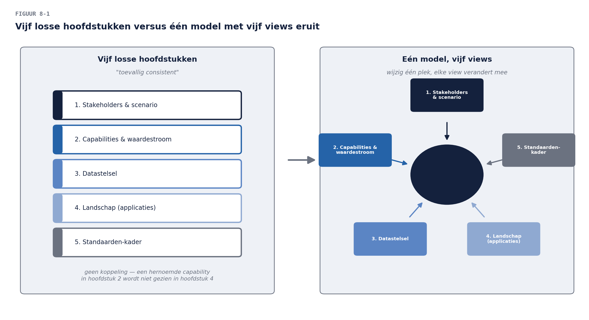

Casus: vijf hoofdstukken, één werkelijkheid?
⏱ 16 minJe visie voor het werkgeversdossier telt inmiddels vijf hoofdstukken: stakeholders en scenario (fase A), capabilities en waardestroom (fase B), het datastelsel (fase C-data), het landschap (fase C-applicatie), het standaardenkader (fase D). Bij de laatste MT-bespreking gebeurde wat vaker gebeurt bij goed werk: de COO bladerde er doorheen en vroeg: “Mooi, maar kun je het me in één plaat laten zien? Ik wil niet vijf hoofdstukken lezen om te snappen hoe het straks samenhangt.”
Diezelfde week ontdek je bij het bijwerken van hoofdstuk 4 (het landschap) dat de matrix capability × applicatie niet meer klopt met de heat map uit hoofdstuk 2 — een capability is in de tussentijd hernoemd, en niemand had de andere plek bijgewerkt. Twee symptomen van hetzelfde probleem: je hebt vijf zelfstandige documenten die toevallig consistent zijn, in plaats van vijf uitzichten op één werkelijkheid.
Dat is precies wat ArchiMate oplost. Niet “mooiere plaatjes” — een taal waarin business, applicaties en technologie elementen zijn van één model, zodat een wijziging op één plek zich overal laat controleren, en zodat elke stakeholder zijn eigen uitzicht krijgt zonder dat er vijf aparte werkelijkheden ontstaan. Vandaag verhuist alles wat je in deel 4 t/m 7 hebt opgehaald naar die ene tekentafel.

Uit Werkboek deel 8, Opdracht 1